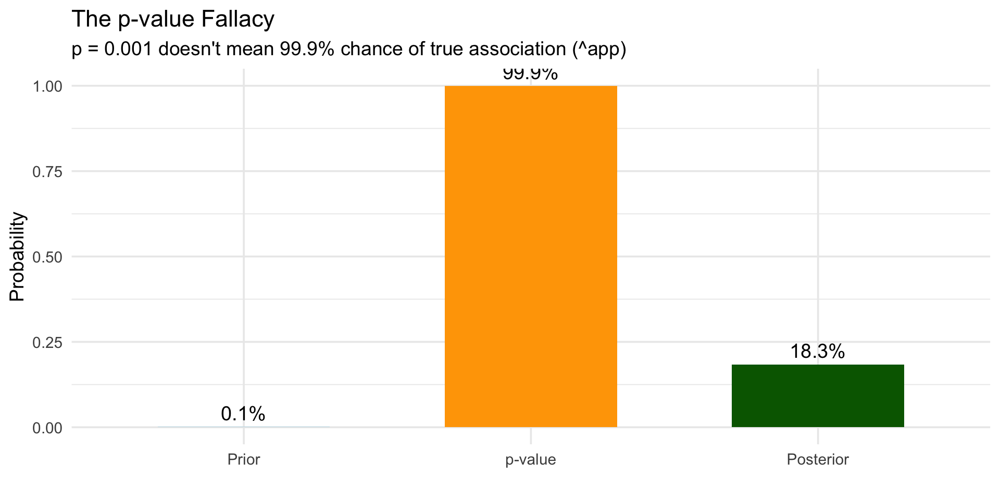
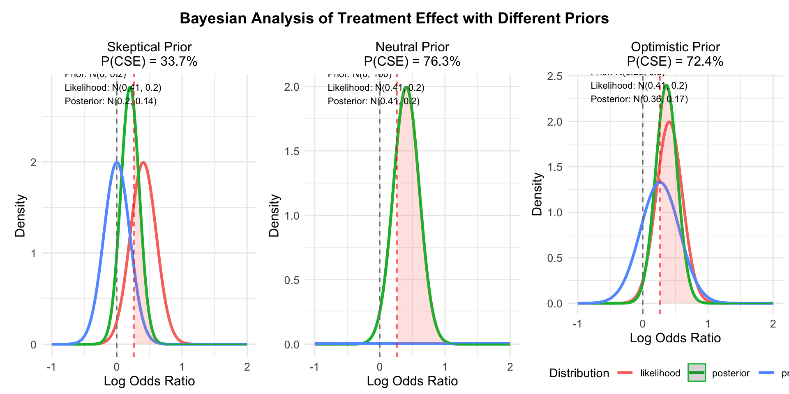

In this seminar, we’ll (attempt to) cover key Bayesian concepts critical for modern genomics:
P-values vs. Posterior Probabilities: Why Bayesian thinking helps avoid misinterpretations
Conjugate Models: Elegant solutions for population genetic inference
Mixture Models: Powerful tools for complex genomic data
Bayesian Clinical & Adaptive Designs: Learning and adapting as data accumulates
1. The P-value Paradox
Lindley’s Paradox
“A result that is statistically significant may not be scientifically significant” - Dennis Lindley (1957)
Note
Lindley’s 1957 paper demonstrated how p-values and Bayes factors can lead to contradictory conclusions [@lindley1957]
The Evidence Paradox
Sometimes a result can be unlikely under the null hypothesis but even more unlikely under the alternative!
Example
Code
# Create example of evidence paradoxz <-seq(-5, 5, length.out =1000)null_density <-dnorm(z, 0, 1)alt_density <-dnorm(z, 5, 1) # Alternative with larger variance# Create example pointz_obs <-2.5# A "significant" observationnull_prob <-dnorm(z_obs, 0, 1)alt_prob <-dnorm(z_obs, 6, 1)# Create data frame for plottingparadox_data <-data.frame(z = z,Null = null_density,Alternative = alt_density)# Plotggplot() +geom_line(data = paradox_data, aes(x = z, y = Null, color ="Null"), size =2) +geom_line(data = paradox_data, aes(x = z, y = Alternative, color ="Alternative"), size =2) +geom_vline(xintercept = z_obs, linetype ="dashed") +geom_point(aes(x = z_obs, y = null_prob), color ="red", size =5) +geom_point(aes(x = z_obs, y = alt_prob), color ="blue", size =5) +scale_color_manual(values =c("Null"="red", "Alternative"="blue")) +annotate("text", x = z_obs -1.5, y = null_prob+0.1, label =sprintf("p(z|H_0) = %.3f", null_prob), size =4) +annotate("text", x = z_obs +1.5, y = alt_prob+0.1, label =sprintf("p(z|H_1) = %.3f", alt_prob), size =4 ) +labs(title ="The Evidence Paradox",subtitle ="A result can be unlikely under H0 but even more unlikely under H1",x ="Z-score",y ="Density") +theme_minimal(base_size =20) +theme(legend.position ="bottom",legend.text =element_text(size =16),legend.title =element_text(size =18),axis.text =element_text(size =18),axis.title =element_text(size =18),plot.title =element_text(size =22),plot.subtitle =element_text(size =12))
The P-value Fallacy
What we want: P(Hypothesis|Data)
What we get: P(Data|Null Hypothesis)
Question for the class: What is a P value?
Prepare to be amazed: Frequentists are all Bayesians! (under some qualifications)
Probabilistic Interpretation of Estimates
In the Bayesian framework:
Parameters are random variables with distributions, not fixed values
Uncertainty is represented directly through probability distributions
All evidence is integrated coherently within a probability framework
Natural quantification of uncertaintywithout hypothetical repeated sampling
Interpretation is direct and intuitive for researchers and clinicians
On the surface the same but … who’s running?
Code
# Create example data for frequentist vs Bayesian comparisonx <-seq(0.2, 0.8, length =1000)# Bayesian posterior (beta distribution)post_y <-dbeta(x, 70, 30)# Create data frame for plottingplot_data <-data.frame(x = x,y = post_y)# Point estimatepoint_est <-0.7ci_lower <-0.61ci_upper <-0.79cred_lower <-qbeta(0.025, 70, 30)cred_upper <-qbeta(0.975, 70, 30)# Get maximum y value for annotation positioningmax_y_val <-max(plot_data$y)# Plotggplot(plot_data, aes(x = x, y = y)) +geom_line(size =1.2, color ="darkblue") +geom_vline(xintercept = point_est, color ="red", linetype ="dashed") +geom_segment(aes(x = ci_lower, xend = ci_upper, y = max_y_val/10, yend = max_y_val/10), color ="darkred", size =2) +geom_segment(aes(x = cred_lower, xend = cred_upper, y = max_y_val/5, yend = max_y_val/5), color ="darkblue", size =2) +annotate("text", x = point_est +0.05, y = max_y_val/1.5, label ="Point Estimate", color ="red") +annotate("text", x = ci_lower -0.05, y = max_y_val/10, label ="95% CI", color ="darkred") +annotate("text", x = cred_upper +0.05, y = max_y_val/5, label ="95% Credible Interval", color ="darkblue") +labs(title ="Bayesian Posterior Distribution",subtitle ="Directly interpretable probability statements about parameters",x ="Parameter Value", y ="Posterior Density") +theme_minimal()
Bayes’ Theorem - The Core Idea
\[P(H|D) = \frac{P(D|H) \times P(H)}{P(D)}\]
Where:
\(P(H|D)\) is the posterior probability - what we want to know
\(P(D|H)\) is the likelihood - how probable the data is under our hypothesis
\(P(H)\) is the prior probability - what we knew before
\(P(D)\) is the evidence - a normalizing constant
Simply: Posterior ∝ Likelihood × Prior
Bayesian Updating: Visual Intuition
Code
# Create data for three distributionsx <-seq(0.001, 0.999, length =1000)prior <-data.frame(x = x, y =dbeta(x, 2, 3), Distribution ="Prior: Beta(2,3)")likelihood <-data.frame(x = x, y =dbeta(x, 7, 3), Distribution ="Likelihood (Data)")posterior <-data.frame(x = x, y =dbeta(x, 9, 6), Distribution ="Posterior: Beta(9,6)")# Combine dataall_distributions <-rbind(prior, likelihood, posterior)# Plot all three distributionsggplot(all_distributions, aes(x = x, y = y, color = Distribution)) +geom_line(size =1.2) +scale_color_manual(values =c("darkgreen", "purple", "red")) +labs(title ="Bayesian Updating of Allele Frequency Estimate",subtitle ="Combining prior knowledge with new data",x ="Allele Frequency", y ="Density") +theme(legend.position ="bottom")
P-values vs. Bayes Factors: Definitions
P-value:
- \(P(data|H_0)\) - probability of data given null hypothesis
- Measures compatibility of data with null hypothesis
- Does not directly measure evidence for alternative
Bayes Factor:
- \(BF_{10} = \frac{P(data|H_1)}{P(data|H_0)}\) - ratio of likelihoods
- \(BF_{01} = \frac{P(data|H_0)}{P(data|H_1)}\) - ratio of likelihoods
- Directly compares evidence for alternative vs. null OR null vs alternative
- Tells you how much to update your beliefs
The P-value Fallacy
Scenario: Testing a SNP for disease association
Traditional approach:
- Obtain p = 0.001
- Declare “significant association”
- Publish result
The fallacy:
- p = 0.001 means “1 in 1000 chance of seeing this data if no association exists”
- NOT “999 in 1000 chance the association is real”
Visualize
Code
# Parametersprior_prob <-1/1000# Prior probability of true associationp_value <-0.001# Observed p-value# Convert p-value to z-scorez <-qnorm(p_value/2, lower.tail =FALSE)# Calculate Bayes factor (approximate)bf <-exp(z^2/2)# Calculate posterior probabilityposterior <- (prior_prob * bf) / (prior_prob * bf + (1- prior_prob))# Create data for visualizationdf <-data.frame(Stage =factor(c("Prior", "p-value", "Posterior"), levels =c("Prior", "p-value", "Posterior")),Probability =c(prior_prob, 1-p_value, posterior),Label =c(paste0(round(prior_prob*100, 2), "%"), paste0(round((1-p_value)*100, 1), "%"), paste0(round(posterior*100, 1), "%")))# Create plotggplot(df, aes(x = Stage, y = Probability)) +geom_bar(stat ="identity", fill =c("lightblue", "orange", "darkgreen"), width =0.6) +geom_text(aes(label = Label), vjust =-0.5, size =5) +ylim(0, 1) +labs(title ="The p-value Fallacy",subtitle ="p = 0.001 doesn't mean 99.9% chance of true association (^app)",x ="", y ="Probability") +theme_minimal(base_size =14)

Key insight: With a realistic prior of 1/1000, a “significant” p-value of 0.001 only gives ~18% posterior probability of true association! (app interlude) Shiny P!
The Mathematical Connection … for B(01)
Under certain conditions, p-values can be converted to minimum Bayes factors, see Sellke, Bayarri, and Berger.
\[BF_{min} ≈ -e \times p \times \log(p)\]
Meaning even the most favorable interpretation of a p-value provides less evidence than typically assumed:
p-value
Minimum Bayes Factor
0.05
0.37
0.01
0.084
0.001
0.0083
What is the Minimum Bayes Factor? This formula (derived by Sellke, Bayarri, and Berger) represents the smallest possible Bayes factor that could correspond to a given p-value, regardless of the specific alternative hypothesis being tested (i.e p(D|H0)/p(D/H1))
Interpreting Bayes Factors .. back to BF 10
Bayes factors have a natural interpretation:
Bayes Factor (\(BF_{10}\))
Evidence for H1
1 - 3
Barely worth mentioning
3 - 10
Substantial
10 - 30
Strong
30 - 100
Very strong
> 100
Extreme
A \(BF_{10} = 10\) means the data are 10 times more likely under H1 than H0.
Null Distribution (\(f_0\)): \[f_0(z) = \mathcal{N}(0, se^2)\] This is the standard normal distribution for tests where \(H_0\) is true.
Alternative Distribution (\(f_1\)): \[f_1(z) = \mathcal{N}(0, se^2 + \sigma^2)\] This is a normal distribution with increased true effect variance for tests where \(H_1\) is true.
The Mathematical Framework
Overall Distribution (\(f\)): \[f(z) = (1-\pi_1)f_0(z) + \pi_1f_1(z)\] A mixture of null and alternative distributions (estimate posterior probability of non-null components) Homework (or in class exercise!
Where \(\mathbf{U}_k\) captures different patterns of sharing: - Equal effects across groups
- Group-specific effects
- Correlated effects
- Structured patterns
Understanding Covariance Matrices in Multivariate Normal Distribution
Let’s consider a bivariate normal distribution with covariance matrix U_k:
# Create a visualization of population structureset.seed(456)# Number of individuals and populationsn_ind <-60n_pop <-3# Create admixture proportions# First 20 individuals mostly from pop1, etc.admixture <-matrix(0, nrow = n_ind, ncol = n_pop)for (i in1:n_ind) {if (i <=20) { admixture[i,] <-c(0.8, 0.1, 0.1) +rnorm(3, 0, 0.05) } elseif (i <=40) { admixture[i,] <-c(0.1, 0.8, 0.1) +rnorm(3, 0, 0.05) } else { admixture[i,] <-c(0.1, 0.1, 0.8) +rnorm(3, 0, 0.05) }# Ensure proportions are positive and sum to 1 admixture[i,] <-pmax(admixture[i,], 0) admixture[i,] <- admixture[i,] /sum(admixture[i,])}# Create data frame for plottingadmix_df <-data.frame(Individual =rep(1:n_ind, n_pop),Population =factor(rep(paste0("Pop", 1:n_pop), each = n_ind)),Proportion =c(admixture))# Create barplotggplot(admix_df, aes(x = Individual, y = Proportion, fill = Population)) +geom_col(width =1) +scale_fill_brewer(palette ="Set1") +labs(title ="Population Structure as a Mixture Model",subtitle ="Each individual is a mixture of ancestral populations",x ="Individual", y ="Ancestry Proportion") +theme(axis.text.x =element_blank(),axis.ticks.x =element_blank())
The STRUCTURE Model in Detail
STRUCTURE: A Bayesian mixture model for population genetics
Key components:
Each individual = mixture of \(K\) ancestral populations
Each population = distinct allele frequencies Goal: Infer ancestry proportions & population frequencies from observed allele counts
-\(\sum{L1} = L_{11} + L_{21} + L_{31}\) (added to \(\alpha_1\)) -\(\sum{L2} = L_{12} + L_{22} + L_{32}\) (added to \(\alpha_2\))
Note
The Dirichlet update incorporates log likelihood contributions from both populations to estimate how much of Individual 1’s ancestry comes from each population.
Updating Allele Frequencies (f) with Fixed Ancestry (q)
Marker 1 (Allele A)
Individual 1’s ancestry: \(q_1 = (0.7, 0.3)\)
Population 1: - Contribution from Individual 1: 0.7 (from \(q_{11}\))
Update: \(f_1^A \sim \text{Beta}(\lambda + 0.7, \lambda + 0.3)\)
Population 2: - Contribution from Individual 1: 0.3 (from \(q_{12}\)) Update: \(f_2^A \sim \text{Beta}(\lambda + 0.3, \lambda + 0.7)\)
Marker 2 (Allele C)
Population 1 - Contribution from Individual 1: 0.7 (from \(q_{11}\))
- Update: \(f_1^C \sim \text{Beta}(\lambda + 0.7, \lambda + 0.3)\)
Population 2: - Contribution from Individual 1: 0.3 (from \(q_{12}\))
- Update: \(f_2^C \sim \text{Beta}(\lambda + 0.3, \lambda + 0.7)\)
Note
Note that each allele contributes fractionally to each population’s frequency estimate, weighted by the individual’s ancestry proportions.
The Variational Bayes Two-Step… building on the EM
Update ancestries given current frequencies: \(P(q_i |\text{data}, f) \propto P(\text{data}|q_i,f)P(q_i)\)
Update frequencies given current ancestries: \(P(f_k | \text{data}, q) \propto P(\text{data}|q,f_k)P(f_k)\)
STRUCTURE Simulation: Ancestry and Allele Frequency Inference
Code
library(tidyverse)library(viridis)library(patchwork)set.seed(2024)# Parametersn_ind <-12n_pop <-2n_marker <-3# 1. Simulate population allele frequencies (for each marker, each pop)pop_freqs <-matrix(runif(n_pop * n_marker, 0.2, 0.8), nrow = n_pop)colnames(pop_freqs) <-paste0("M", 1:n_marker)rownames(pop_freqs) <-paste0("Pop", 1:n_pop)# 2. Simulate true ancestry proportions for each individual# We'll make 4 mostly Pop1, 4 mostly Pop2, 4 admixedq_true <-rbind(t(replicate(4, c(rbeta(1, 8, 2), rbeta(1, 2, 8)))), # mostly Pop1t(replicate(4, c(rbeta(1, 2, 8), rbeta(1, 8, 2)))), # mostly Pop2t(replicate(4, c(rbeta(1, 5, 5), rbeta(1, 5, 5)))) # admixed)q_true <- q_true /rowSums(q_true)colnames(q_true) <-c("Pop1", "Pop2")# 3. Simulate genotypes for each individual at each marker# For simplicity, haploid: each allele is drawn from a population with probability = qgeno <-matrix(NA, nrow = n_ind, ncol = n_marker)for (i in1:n_ind) {for (j in1:n_marker) {# Choose population for this allele pop <-sample(1:n_pop, 1, prob = q_true[i, ])# Draw allele: 1 = reference (A), 0 = alt (C) geno[i, j] <-rbinom(1, 1, pop_freqs[pop, j]) }}colnames(geno) <-paste0("M", 1:n_marker)rownames(geno) <-paste0("Ind", 1:n_ind)# 4. "Estimate" ancestry proportions over iterations (toy EM/MCMC)# We'll start with random q, and update using the observed alleles and pop freqsn_iter <-10q_est <-array(NA, dim =c(n_ind, n_pop, n_iter))q_est[,,1] <-t(apply(matrix(runif(n_ind * n_pop), ncol = n_pop), 1, function(x) x/sum(x)))for (it in2:n_iter) {for (i in1:n_ind) {# For each population, compute likelihood of observed alleles loglike <-rep(0, n_pop)for (k in1:n_pop) {for (j in1:n_marker) { p <- pop_freqs[k, j] a <- geno[i, j] loglike[k] <- loglike[k] +dbinom(a, 1, p, log=TRUE) } }# Add prior (Dirichlet(1,1) = uniform) post <-exp(loglike -max(loglike)) # for stability post <- post /sum(post)# Update q as convex combination (like EM) q_est[i, , it] <-0.7* q_est[i, , it-1] +0.3* post q_est[i, , it] <- q_est[i, , it] /sum(q_est[i, , it]) }}# 5. Prepare data for plotting# True ancestryq_true_df <-as.data.frame(q_true)q_true_df$Individual <-factor(1:n_ind)q_true_long <-pivot_longer(q_true_df, cols =starts_with("Pop"), names_to ="Population", values_to ="Proportion")# Estimated ancestry at each iterationq_est_df <-as.data.frame(q_est[,,n_iter])colnames(q_est_df) <-c("Pop1", "Pop2")q_est_df$Individual <-factor(1:n_ind)q_est_long <-pivot_longer(q_est_df, cols =starts_with("Pop"), names_to ="Population", values_to ="Proportion")# Estimated ancestry over all iterations (for a few individuals)q_iter <-lapply(1:6, function(i) {as.data.frame(t(q_est[i,,])) %>%mutate(Iteration =1:n_iter, Individual = i)})q_iter <-bind_rows(q_iter)colnames(q_iter)[1:2] <-c("Pop1", "Pop2")q_iter_long <-pivot_longer(q_iter, cols =c("Pop1", "Pop2"), names_to ="Population", values_to ="Proportion")# 6. Plot# STRUCTURE-style barplot: true ancestryp_true <-ggplot(q_true_long, aes(x = Individual, y = Proportion, fill = Population)) +geom_col(width =1) +scale_fill_manual(values =c("Pop1"="blue", "Pop2"="red")) +labs(title ="True Ancestry Proportions", y ="Proportion", x ="Individual") +theme_minimal(base_size =14)# STRUCTURE-style barplot: estimated ancestry (final iteration)p_est <-ggplot(q_est_long, aes(x = Individual, y = Proportion, fill = Population)) +geom_col(width =1) +scale_fill_manual(values =c("Pop1"="blue", "Pop2"="red")) +labs(title ="Estimated Ancestry (Iteration 10)", y ="Proportion", x ="Individual") +theme_minimal(base_size =14)# Trajectory plot for a few individualsp_traj <-ggplot(q_iter_long, aes(x = Iteration, y = Proportion, color = Population)) +geom_line(size =1.2) +facet_wrap(~ Individual, nrow =2) +scale_color_manual(values =c("Pop1"="blue", "Pop2"="red")) +labs(title ="Ancestry Proportion Trajectories (First 6 Individuals)", y ="Proportion", x ="Iteration") +theme_minimal(base_size =12)# Heatmap of population allele frequenciespop_freqs_df <-as.data.frame(pop_freqs)pop_freqs_df$Population <-rownames(pop_freqs)pop_freqs_long <-pivot_longer(pop_freqs_df, cols =starts_with("M"), names_to ="Marker", values_to ="Frequency")p_freq <-ggplot(pop_freqs_long, aes(x = Marker, y = Population, fill = Frequency)) +geom_tile() +scale_fill_viridis(option ="C") +labs(title ="Population Allele Frequencies", x ="Marker", y ="Population") +theme_minimal(base_size =12)# Combine plots(p_true | p_est) / (p_traj | p_freq) +plot_layout(heights =c(1, 1.2))
Effect Size Mixtures in GWAS
Problem: Most variants have no effect, but some do
Solutions:
- Spike-and-slab prior: Mixture of point mass at zero and continuous distribution
- Scale mixture: Mixture of normal distributions with different variances
- Bayesian variable selection: Latent indicator for whether variant is causal
5. Bayesian Clinical Trials:
Observe OR of 1.5O

Bayes combining information
Problem: The meta analysis example, combining evidence across heterogeneous studies
Model formulation:
- Let \(y_i\) be the observed effect in study \(i\)
- Let \(\sigma_i^2\) be the variance (often known from standard error)
- Let \(\theta_i\) be the true effect in study \(i\)